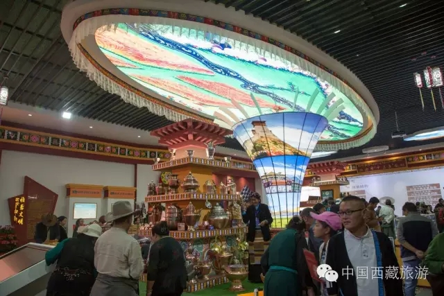

西藏商报

9月10日，据第三届藏博会组委会介绍，本届藏博会首次借助移动互联支持平台，将纸质版《会务指南》进行升级，创新打造藏博会手机轻应用“人间圣地 天上西藏”，目前已正式上线。记者在第三届藏博会旅发委的展台看到，“人间圣地 天上西藏”轻应用已经在展馆内进行展示。 据悉，“人间圣地 天上西藏”是藏博会组委会依托“微景天下”技术打造的基于轻应用技术的对外宣传服务平台。西藏微景天下科技有限公司负责人乐雄杰介绍，这款轻应用将为与会嘉宾提供最完善的服务，包括每天的日程安排、各项活动场馆导航、会务资料下载等。 “与会嘉宾可以提前在轻应用上查看活动举办的地点并进行导航，为了避免‘找错地方’的尴尬，还可以提前在轻应用里查看现场的360°全景。”乐雄杰说，藏博会手机轻应用的获取方式十分简便，用户可在场馆内、宣传手册、报纸上扫描二维码进入，轻应用也将通过西藏政府网、组委会官网、微信公众账号等平台发布。轻应用不需要下载即可打开，如果需要经常使用，可以点击右上角进行收藏，下次使用再打开即可。 “如果你是游客，轻应用将为你提供‘逛馆’的全方位服务。”乐雄杰介绍，游客不仅可以通过导航来到场馆，还可以提前了解会展中心1、2号馆的布展情况，并根据轻应用推荐获知线路。逛累了需要补充能量的时候，可以在轻应用里看看美食街都有什么美味，然后再导航过去。 此外，轻应用还将西藏的大美风光、人文景观进行了展示，记者看到，在“大美西藏”里，嘉宾和游客都可以用手机体验布达拉宫珍宝馆、大昭寺、小昭寺、色拉寺、哲蚌寺、罗布林卡、哲蚌寺的360°全景，身临其境地去感受藏地风光。不仅如此，藏戏、石雕、木雕等艺术瑰宝也都在轻应用里进行了诠释和展现。 轻应用上线发布后，微景天下还将基于轻应用的使用情况，为藏博会提供数据监测，对活动期间游客进行行为轨迹进行分析，对拉萨市范围内的景区、酒店等关键地点进行客流实时监测、游客行为分析、承载量统计和优化管理建议等，通过数据挖掘分析，对关键词人群属性进行聚类分析。活动结束后，将形成《2016藏博会白皮书》，提供数据分析成果，留存活动资料数据、用户信息。